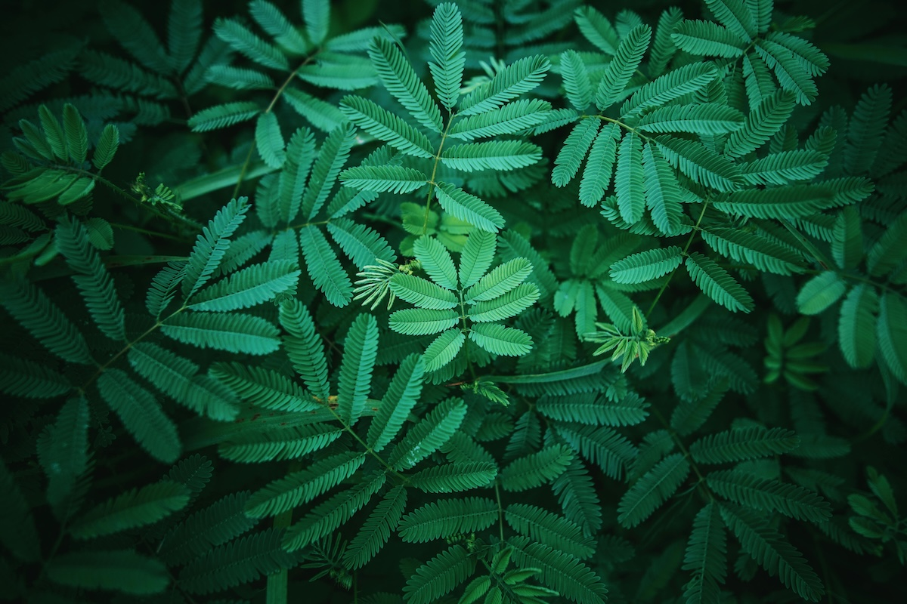

Yeşil Renk: Doğanın Ruhunu Fotoğraflara Yansıtmak
Yeşil renk, yaşamın ve doğanın en belirgin sembollerinden biridir. Ormanların, çayırların, tarlaların ve bitkilerin rengi olan yeşil, aynı zamanda yenilenmenin ve huzurun simgesi olarak da bilinir. Fotoğrafçılıkta yeşil renk, manzaraların derinliğini artıran, sahnelere hayat katan ve izleyiciyi doğanın kucağına davet eden bir öğe olarak öne çıkar. Peki, yeşili en iyi şekilde nasıl yakalarız ve bu rengi fotoğraflarımızda nasıl anlamlı bir şekilde kullanırız?
Yeşilin Doğadaki Görsel Gücü
Yeşil, çevremizde en sık karşılaştığımız renklerden biridir ve bu yüzden çoğu zaman farkına varmadan göz ardı edebiliriz. Ancak bir fotoğrafçı olarak, yeşilin tonlarıyla oynamak, doğanın enerjisini karelere taşımak için güçlü bir fırsat sunar.
Doğada yeşilin tonları sonsuzdur: İlkbaharın parlak yeşil yapraklarından, yazın derin ve doygun çimenlerine; sonbaharda ise sarıya ve kahverengiye çalan yeşil tonlarına kadar. Bu renk değişimleri, doğanın döngüsünü ve mevsimlerin geçişini anlatmanın en etkili yollarından biridir. Ayrıca, yeşilin sakinleştirici ve huzur verici etkisi, fotoğraflara bakıldığında izleyicide dingin bir his yaratır.
Yeşil Rengin Fotoğraflardaki Teknik Önemi
Fotoğrafçılıkta renkler, kompozisyonun ve estetiğin temel yapı taşlarından biridir. Yeşil, fotoğraflarınıza derinlik katmak için mükemmel bir seçimdir. İşte yeşili doğru şekilde kullanmanın bazı yolları:
- Tonların Çeşitliliği: Yeşil renk tek başına durağan gibi görünse de, farklı tonlarıyla dikkat çekici kompozisyonlar yaratabilirsiniz. Örneğin, sabahın erken saatlerinde güneşin ilk ışıkları, yeşil bitki örtüsüne altın tonları katarken, akşamüstü ışığı ise daha sıcak ve derin tonlar sunar. Hangi saat diliminde çekim yapacağınıza bağlı olarak, yeşilin farklı ruh hallerini yakalayabilirsiniz.

- Kontrast Oluşturma: Yeşilin doğal tonlarıyla diğer renkler arasında kontrast oluşturarak, sahnenin canlılığını artırabilirsiniz. Örneğin, kırmızı çiçeklerle çevrili bir yeşil alan, renk tekerleğinde zıt renklerin çarpışmasıyla dikkat çekici bir görüntü sağlar. Ayrıca, beyaz bulutlarla kaplı bir gökyüzü veya mavi suyun üzerindeki yeşil ağaçlar, fotoğraflarınıza görsel zenginlik kazandırır.

- Minimalist Yaklaşımlar: Doğada sadelikten yana olan minimalist fotoğraflar da yeşil rengi ön plana çıkarmak için idealdir. Tek bir yeşil yaprak, yalnız bir çimen dalı veya geniş bir çayırda uzanan basit bir patika yolu, fotoğrafınıza dingin bir estetik katabilir.

Yeşilin Psikolojik ve Kültürel Anlamları
Fotoğrafçılık yalnızca bir görsel sanat değil, aynı zamanda duygusal bir deneyimdir. Yeşil rengin fotoğraflarınızda yarattığı etki, izleyicilerde derin psikolojik tepkiler uyandırabilir. Yeşil, birçok kültürde huzurun, barışın, büyümenin ve yeniden doğuşun rengi olarak kabul edilir. Örneğin:
- Rahatlama ve Huzur: Yeşil renk, insanlarda rahatlatıcı bir etki yaratır. Doğa yürüyüşleri, parkta geçirilen zamanlar, yeşil alanlarla çevrili bir yaşam alanı, insanların stresten uzaklaşmasına ve zihinlerini boşaltmalarına yardımcı olur. Fotoğraflarınızda yeşil renk kullanarak izleyicilere bu huzurlu ortamları hatırlatabilirsiniz.
- Yenilenme ve Umut: Bahar mevsiminde doğanın yeniden canlanmasıyla yeşil rengin parlaklığı artar. Bu, yaşamın döngüsünü ve sürekli yenilenmesini simgeler. Fotoğraflarınızda yeni filizlenmiş bitkiler, yeşeren ağaçlar veya taptaze çimenler kullanarak bu umudu ve yenilenme hissini yansıtabilirsiniz.
- Doğaya Dönüş: Modern hayatın koşuşturmacasından uzaklaşmak ve doğaya geri dönmek, son yıllarda popüler hale gelen bir trend. Fotoğraflarınızda geniş yeşil alanlar, ormanlar veya doğal yaşam alanlarını betimleyerek izleyicilere bu doğaya dönüş özlemini hatırlatabilirsiniz.
Yeşil ve Işık İlişkisi
Fotoğrafçılıkta ışık, tüm renklerin temelidir ve yeşil de buna dahil. Doğal ışık altında yeşilin farklı tonları ortaya çıkar. Güneş ışığı, bulutlu havalar, hatta altın saat dediğimiz sabah ve akşamüstü ışığı, yeşilin farklı katmanlarını vurgular. Bu nedenle, yeşil renkli fotoğraflar çekerken ışıkla nasıl oynadığınız büyük fark yaratır.
- Sert Işıkta Yeşil: Öğlen saatlerinde güneşin en tepede olduğu zamanlarda çekim yaparken, sert ışık bitkilerin üzerindeki gölgeleri belirginleştirir. Bu, yeşilin kontrastını artırır, ancak fazla sertleşen ışık bitkinin doğal tonlarını yitirmesine neden olabilir.
- Yumuşak Işıkta Yeşil: Bulutlu havalar ve gün doğumu ya da gün batımı gibi zamanlarda yeşil daha yumuşak ve pürüzsüz görünür. Bu ışık koşulları, özellikle geniş manzaralar çekiminde yeşilin zenginliğini ve detaylarını en iyi şekilde yakalamanızı sağlar.
Yeşilin Sanat ve Tarihteki Yeri
Yeşil renk, yalnızca doğanın ve fotoğrafçılığın bir unsuru değil, aynı zamanda sanat tarihinde de derin bir geçmişe sahiptir. Ortaçağ sanatında yeşil, cennetin ve doğanın sembolü olarak kullanılırken, Rönesans döneminde özellikle arka plan manzaralarında tercih edilmiştir. Modern sanatta ise yeşil, çevre hareketlerinin ve sürdürülebilirlik mesajlarının bir taşıyıcısı olarak öne çıkar.
Sonuç
Yeşil renk, doğanın bir parçası olmanın ötesinde, fotoğrafçılıkta hem teknik hem de duygusal anlamda güçlü bir araçtır. Bu renk, izleyicilere huzur ve yenilenme duygusu verirken, aynı zamanda güçlü kontrastlar ve kompozisyonlar oluşturmanıza olanak tanır. Yeşilin farklı tonlarını ve dokularını keşfederek, fotoğraflarınıza derinlik, anlam ve estetik katabilirsiniz.